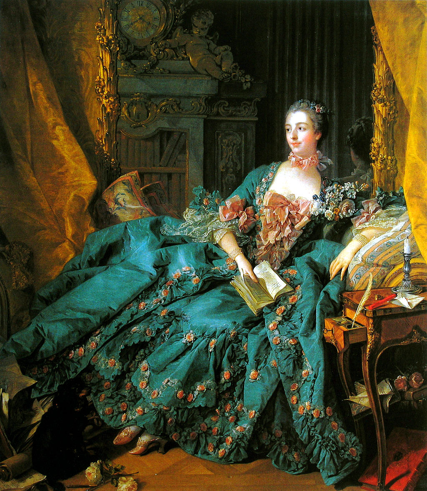

<head>
<meta charset="UTF-8" />
<meta name="keywords" content="drawing, painting" />
<meta name="description" content="drawings by Sunjy" />
<title>Sunjy</title>
<link rel="shortcut icon" type="image/x-icon" href="../../mImages/mCommon/favicon.ico" media="screen" />
<link rel="stylesheet" type="text/css" href="../../mCsses/mCommon/mCssA.css" />
<link rel="stylesheet" type="text/css" href="../../mCsses/mCommon/mCssB.css" />
<link rel="stylesheet" type="text/css" href="../../mCsses/mCommon/mCssC.css" />
<link rel="stylesheet" type="text/css" href="../../mCsses/mCommon/mCssD.css" />
<link rel="stylesheet" type="text/css" href="../../mCsses/mContent/mCssA.css" />
<link rel="stylesheet" type="text/css" href="../../mCsses/mContent/mCssB.css" />
<link rel="stylesheet" type="text/css" href="../../mCsses/mContent/mCssC.css" />
<link rel="stylesheet" type="text/css" href="../../mCsses/mContent/mCssD.css" />
</head>
<script type="text/javascript" src="../../mScripts/mContent/mContentAA.js" /></script>
<script type="text/javascript" src="../../mScripts/mContent/mContentAB.js" /></script>
<script type="text/javascript" src="../../mScripts/mContent/mContentAC.js" /></script>
<script type="text/javascript" src="../../mScripts/mContent/mContentAD.js" /></script>
<script type="text/javascript"></script> 
<script type="text/javascript">
document.write('<div class="mImgAbsolute"></div>');
/*
document.write('<p class="mFontSizeBColor" />From a white paper...</p>');
document.write('<table class="center"><tr><td>');
document.write('');
document.write('</td></tr></table>');
*/
</script>


<script type="text/javascript">
document.write('<p class="mFontSizeBColor" />Portrait of Madame de Pompadour</p>');
document.write('<p class="mFontSizeSColor" />“Portrait of Madame de Pompadour” by Francois Boucher depicts the chief mistress of Louis XV from 1745 to 1751, who remained influential in the French royal court favorite until her death.<br><br>Through her position as court favorite, Pompadour wielded considerable power and influence; she was elevated in 1752, to Duchess, and in 1756 to a Lady-in-Waiting to the Queen, the noblest rank possible for a woman at court.<br><br>Pompadour effectively played the role of the prime minister, becoming responsible for the advancements and dismissals, and contributing to domestic and foreign politics.<br><br>Madame de Pompadour was also an influential patron of the arts, who played a central role in making Paris the perceived capital of taste and culture in Europe.<br><br>She attained this influence through the appointments to leadership positions related to the arts and by controlling government policy and expenditures for the arts.<br><br>She championed French pride by supporting and subsidizing a porcelain factory at Sèvres in 1759, which became one of the most famous porcelain manufacturers in Europe.<br><br>Numerous sculptors and portrait painters were patronized by Pompadour, among them the François Boucher, the artist of this portrait.<br><br>Pompadour greatly influenced and stimulated the artistic style known as the “Rococo” in the fine and decorative arts.<br><br>Her patronage of the artists like Boucher and her constant refurbishing of the fifteen residences she held with Louis was her way of capturing the attention of the king. It was also a strategy for cultivating and promoting her public image.<br><br>Madame de Pompadour<br><br>Jeanne Antoinette Poisson (1721 – 1764) is today commonly known as Madame de Pompadour. Married at the age of nineteen in 1741, her husband fell passionately in love with his wife, while she maintained that she would never leave him – except for the King.<br><br>In 1744, Jeanne Antoinette sought to catch the eye of the King while he led the hunt in the forest of Sénart. Because she occupied an estate near this location, she was permitted to follow the royal party at a distance.<br><br>However, wanting to attract the King’s notice, Jeanne Antoinette drove directly in front of the King’s path on at least two occasions.<br><br>The King’s current mistress warned off Jeanne Antoinette; however, the position became vacant when she died, shortly after.<br><br>Jeanne Antoinette then received a formal invitation to attend the masked ball held at the Palace of Versailles to celebrate the marriage of the Dauphin.<br><br>It was at this ball that the King, disguised, publicly declared his affection for Jeanne Antoinette. Before all of the court and the royal family, Louis unmasked himself before Jeanne Antoinette.<br><br>She was dressed as Diana the Huntress, in reference to their encounter in the forest.<br><br>In time, Pompadour took charge of the king’s schedule and was a valued aide and advisor. She secured titles of nobility for herself and her relatives and built a network of clients and supporters.<br><br>She was, however cautious not to alienate the Queen. In 1756, the Marquise de Pompadour was named as the thirteenth lady in waiting to the queen, and a position considered the most prestigious at the court.<br><br>Pompadour was a significant patroness of architecture and decorative arts and a patroness of the philosophes of the Enlightenment, including Voltaire.<br><br>However, critics at the time accused her as an evil influence; they were driven by fears for the social and gender hierarchies.<br><br>Pompadour was not born into the aristocracy, yet her gain of power and influence threatened their privileged positions.<br></p>');
document.write('<table class="center" /><tr><td>');
document.write('<br>Through her position as court favorite, Pompadour wielded considerable power and influence; she was elevated in 1752, to Duchess, and in 1756 to a Lady-in-Waiting to the Queen, the noblest rank possible for a woman at court.<br><br>Pompadour effectively played the role of the prime minister, becoming responsible for the advancements and dismissals, and contributing to domestic and foreign politics.<br><br>Madame de Pompadour was also an influential patron of the arts, who played a central role in making Paris the perceived capital of taste and culture in Europe.<br><br>She attained this influence through the appointments to leadership positions related to the arts and by controlling government policy and expenditures for the arts.<br><br>She championed French pride by supporting and subsidizing a porcelain factory at Sèvres in 1759, which became one of the most famous porcelain manufacturers in Europe.<br><br>Numerous sculptors and portrait painters were patronized by Pompadour, among them the François Boucher, the artist of this portrait.<br><br>Pompadour greatly influenced and stimulated the artistic style known as the “Rococo” in the fine and decorative arts.<br><br>Her patronage of the artists like Boucher and her constant refurbishing of the fifteen residences she held with Louis was her way of capturing the attention of the king. It was also a strategy for cultivating and promoting her public image.<br><br>Madame de Pompadour<br><br>Jeanne Antoinette Poisson (1721 – 1764) is today commonly known as Madame de Pompadour. Married at the age of nineteen in 1741, her husband fell passionately in love with his wife, while she maintained that she would never leave him – except for the King.<br><br>In 1744, Jeanne Antoinette sought to catch the eye of the King while he led the hunt in the forest of Sénart. Because she occupied an estate near this location, she was permitted to follow the royal party at a distance.<br><br>However, wanting to attract the King’s notice, Jeanne Antoinette drove directly in front of the King’s path on at least two occasions.<br><br>The King’s current mistress warned off Jeanne Antoinette; however, the position became vacant when she died, shortly after.<br><br>Jeanne Antoinette then received a formal invitation to attend the masked ball held at the Palace of Versailles to celebrate the marriage of the Dauphin.<br><br>It was at this ball that the King, disguised, publicly declared his affection for Jeanne Antoinette. Before all of the court and the royal family, Louis unmasked himself before Jeanne Antoinette.<br><br>She was dressed as Diana the Huntress, in reference to their encounter in the forest.<br><br>In time, Pompadour took charge of the king’s schedule and was a valued aide and advisor. She secured titles of nobility for herself and her relatives and built a network of clients and supporters.<br><br>She was, however cautious not to alienate the Queen. In 1756, the Marquise de Pompadour was named as the thirteenth lady in waiting to the queen, and a position considered the most prestigious at the court.<br><br>Pompadour was a significant patroness of architecture and decorative arts and a patroness of the philosophes of the Enlightenment, including Voltaire.<br><br>However, critics at the time accused her as an evil influence; they were driven by fears for the social and gender hierarchies.<br><br>Pompadour was not born into the aristocracy, yet her gain of power and influence threatened their privileged positions.<br>" />');
document.write('</td></tr></table>');
</script>


